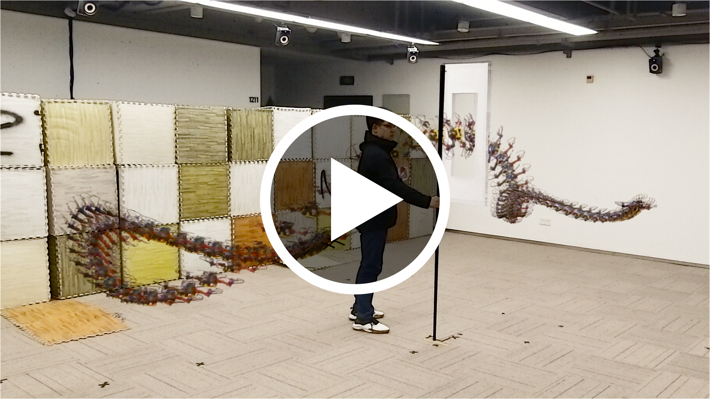

Hey, I'm Zhepei, and I'm currently pursuing my PhD in Automation under the supervision of Fei Gao and Chao Xu, at the FAST Lab from Zhejiang University, China, working on the motion planning and autonomous navigation for aerial robotics.
I finished my Bachelor at College of Control Science and Engineering, Zhejiang University, in 2017, also studying Automation.
Selected: A General-Purpose Trajectory Optimizer for Multicopters

Zhepei Wang, Xin Zhou, Chao Xu, and Fei Gao, “Geometrically Constrained Trajectory Optimization for
Multicopters”. Under Review, 2021.
[pdf | video |
arxiv link]
(Reported by IEEE Spectrum Website)
Xin Zhou, Zhepei Wang, Hongkai Ye, Chao Xu, and Fei Gao, “EGO-Planner: An ESDF-free Gradient-based Local
Planner for Quadrotors”. IEEE Robotics and Automation Letters (RA-L), 2021.
[pdf | bibtex | video | publisher link]
(Reported by IEEE Spectrum Website)
Zhepei Wang, Hongkai Ye, Chao Xu, and Fei Gao, “Generating Large-Scale Trajectories Efficiently using
Double Descriptions of Polynomials”. IEEE International Conference on Robotics and Automation
(ICRA),
2021.
[pdf | video | arxiv link]
Jialin Ji*, Zhepei Wang*, Yingjian Wang, Chao Xu, and Fei Gao, “Mapless-Planner: A Robust and Fast Planning
Framework for Aggressive Autonomous Flight without Map Fusion”. IEEE International Conference on
Robotics
and Automation (ICRA), 2021.
[pdf | video
| arxiv link] (*Co-First Authors)
Zhepei Wang, Xin Zhou, Chao Xu, Jian Chu, and Fei Gao, “Alternating Minimization Based Trajectory Generation
for Quadrotor Aggressive Flight”. IEEE Robotics and Automation Letters (RA-L), 2020, and
IEEE/RSJ International Conference on Intelligent Robots and Systems (IROS), 2020.
[pdf | bibtex | video | publisher link]
Zhichao Han, Zhepei Wang, Chao Xu, and Fei Gao, “Fast-Racing: An Open-source Strong Baseline for SE(3)
Planning in
Autonomous Drone Racing”. Accepted by IEEE Robotics and Automation Letters (RA-L), 2021.
[pdf | video
| arxiv link]
Xin Zhou, Zhepei Wang, Xiangyong Wen, Jiangchao Zhu, Chao Xu, and Fei Gao, “Decentralized Spatial-Temporal
Trajectory Planning for Multicopter Swarms”. Technical Report, 2021.
[pdf | video
| arxiv link]
(Reported by IEEE Spectrum Website)
Hongkai Ye, Xin Zhou, Zhepei Wang, Chao Xu, Jian Chu, and Fei Gao, “TGK-Planner: An Efficient Topology
Guided Kinodynamic Planner for Autonomous Quadrotors”. IEEE Robotics and Automation Letters (RA-L),
2021.
[pdf | bibtex| video | publisher link]
Shaohui Yang, Botao He, Zhepei Wang, Chao Xu, and Fei Gao, “Whole-Body Real-Time Motion Planning for
Multicopters”. IEEE International Conference on Robotics and Automation (ICRA), 2021.
[pdf | video]
Jiangcheng Zhu, Jun Zhu, Zhepei Wang, Shan Guo, and Chao Xu, “Hierarchical Decision and Control for
Continuous
Multitarget Problem: Policy Evaluation With Action Delay”. IEEE Transactions on Neural Networks and
Learning Systems (T-NNLS), 2018.
[pdf | bibtex | publisher link]